Gallimimus
Thợ săn gà kỷ Phấn trắng
Tổng quan
Kỷ
Cretaceous
Họ
Ornithomimidae
Chi
Gallimimus
Dài
6 m
Cao
3 m
Nặng
440 kg
Thức ăn


Gallimimus là một chi khủng long chân thú sống ở nơi bây giờ là Mông Cổ vào cuối kỷ Phấn trắng, khoảng 70 triệu năm trước. Gallimimus là loài ornithomimid lớn nhất được biết đến.
Nguồn: wikipedia.org
Phân bố
Đồng bằng phía Đông châu Á
Thông tin thêm về Gallimimus
Tên khoa học
Theo tiếng Hy Lạp cho "bắt chước gà" hoặc "thợ săn gà", đề cập đến sự tương đồng giữa đốt sống cổ của nó và của các Galliforme. Tên cụ thể của loài Gallimimus bullatus có nguồn gốc từ bulla, vòng cổ bằng vàng được đeo bởi thanh niên La Mã, do sự giống nhau giữa đáy hộp sọ của Gallimimus. Vào thời điểm nó được đặt tên, hóa thạch của Gallimimus đại diện cho vật liệu ornithomimid hoàn chỉnh nhất và được bảo tồn tốt nhất, và chi này vẫn là một trong những thành viên nổi tiếng nhất của nhóm Ornithomimosauria.
Kích thước
Gallimimus là loài ornithomimid lớn nhất được biết đến; con trưởng thành dài khoảng 6-8 mét, cao 1.9 mét ở hông và nặng khoảng 200 - 440 kg (970 lb).
Ngoại hình
Bằng chứng hóa thạch cho thấy chi Ornithomimus họ hàng của nó sở hữu lông vũ, chi này chắc chắn cũng sẽ có lông. Cái đầu nhỏ và nhẹ với đôi mắt to hướng ra hai bên. Mõm chúng dài so với các loài ornithomimid khác, mặc dù nó rộng và tròn hơn ở chóp so với các loài khác.
Gallimimus không có răng mà có một mỏ sừng keratin và có hàm dưới thanh tú. Nhiều đốt sống có các khe hở dùng để chứa đầy không khí. Cổ dài hơn nhiều so với phần thân. Bàn tay có ngắn nhất trong số các ornithomimosaur và mỗi bàn tay có ba ngón với móng vuốt cong. Các chi trước rất yếu trong khi các chân sau dài tương đối.
Chế độ ăn và săn mồi
Với cái đầu nhỏ và không có răng này, người ta tin rằng Gallimimus có thể có chế độ ăn là các loài côn trùng, động vật nhỏ, trứng và thậm chí có thể là một số loại thực vật.
Là một ornithomimid, Gallimimus sẽ là một loài chạy nhanh, sử dụng tốc độ của nó để trốn thoát kẻ săn mồi; vận tốc của nó được ước tính là vào khoảng 42-56 km/h. Nó có tầm nhìn tốt và trí thông minh tương đương với các loài chim không bay hiện đại (bao gồm đà điểu). Cổ của chúng rất cơ động có thể đã giúp xác định vị trí con mồi nhỏ trên mặt đất, nhưng chúng cũng có thể là một loài ăn tạp cơ hội. Người ta cũng đề xuất rằng chúng đã sử dụng các cấu trúc cột nhỏ trong mỏ của nó để ăn lọc, mặc dù các cấu trúc này có thể đã được sử dụng để ăn thực vật khó nhằn, cho thấy chế độ ăn cỏ.
Kỷ nguyên
Gallimimus là một chi khủng long chân thú sống trên Trái Đất cách đây khoảng 70 triệu năm trước (Mya) vào cuối kỷ Phấn trắng.
Phân bố
Gallimimus có thể đã sống theo nhóm, dựa trên việc phát hiện ra một số mẫu vật được bảo quản tại cùng một thềm xương. Gallimimus là loài khủng long đà điểu được tìm thấy nhiều nhất tại thành hệ Nemegt, nơi chúng sống cùng với các họ hàng như Anserimimus và Deinocheirus. Vô số hóa thạch trong các giai đoạn tăng trưởng khác nhau đã được phát hiện bởi các đoàn thám hiểm Ba Lan và Mông Cổ tại sa mạc Gobi thuộc Mông Cổ, châu Á.
Khám phá
Mặc dù được phát hiện vào năm 1972, Gallimimus là một loài khủng long tương đối ít được biết đến cho đến khi xuất hiện trong bộ phim bom tấn năm 1993, Jurassic Park.
Loài Theropod này đã được phát hiện tại sa mạc Gobi vào năm 1963, và được đại diện bởi nhiều hóa thạch còn lại, từ cá thể con đến cá thể trưởng thành; nhiều thập kỷ nghiên cứu gần đây đã cho thấy một con khủng long sở hữu xương rỗng, xương chim, chân sau cơ bắp, đuôi dài và nặng, và có lẽ đáng ngạc nhiên nhất là hai mắt đặt ở hai bên đối diện với đầu nhỏ hẹp, có nghĩa là Gallimimus bị thiếu tầm nhìn.
Sự tuyệt chủng
Gallimimus và các loài khủng long khác đã tuyệt chủng khoảng 65 triệu năm trước vào cuối kỷ Phấn Trung gian trong sự kiện tuyệt chủng hàng loạt KT-Pg. Sự kiện này được cho là do va chạm của một thiên thạch hoặc một ngọn núi lửa lớn gây ra, khiến cho khối lượng lớn các loài sinh vật trên Trái đất bị tiêu diệt hoặc bị ảnh hưởng mạnh mẽ.
Sự tuyệt chủng của Gallimimus và các loài khủng long khác đã mở ra cơ hội cho các loài động vật khác để phát triển và tiến hóa trong môi trường mới. Các loài động vật này đã trở thành những động vật thống trị trên Trái đất trong thời kỳ Tiểu đại khủng long và đến ngày nay.